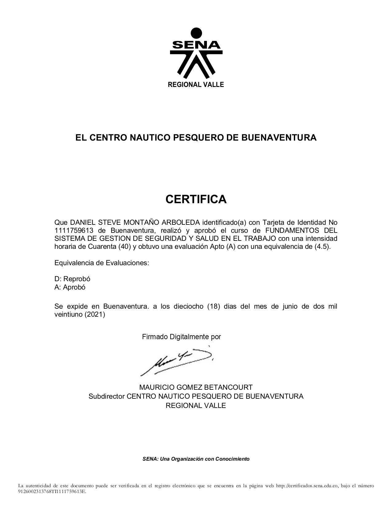
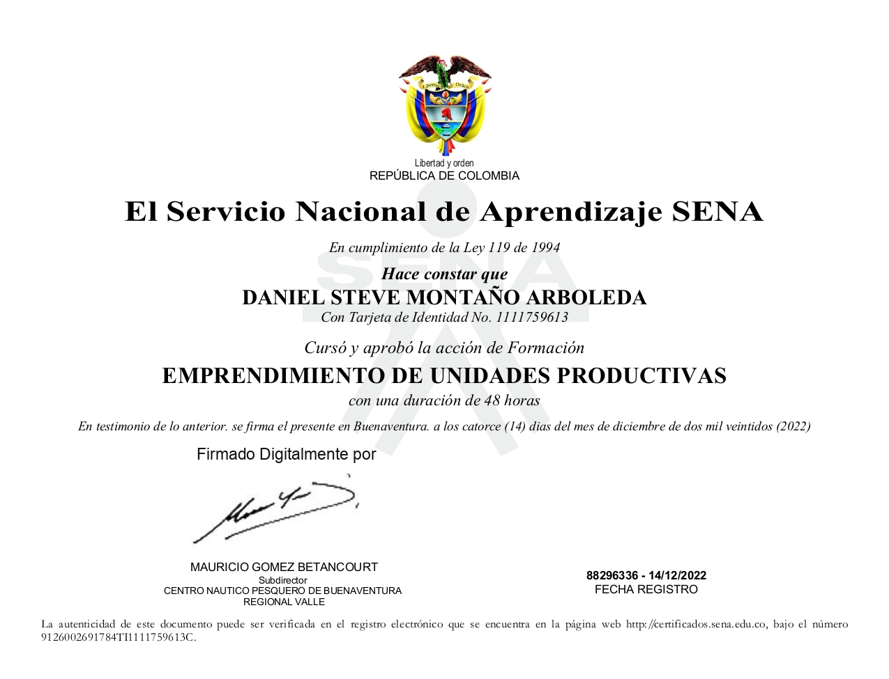
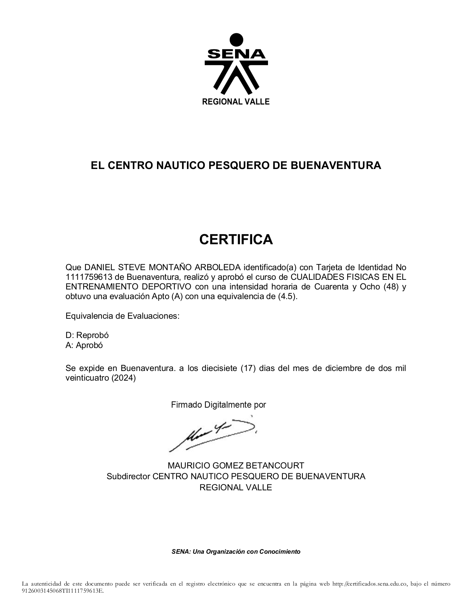

Certificación académica tecnologa, en Analis y Desarrollo de Software.
Certificado en Fundamentos del SG-SST
Certificado de fundamentos del Sistema de Gestión de Seguridad y Salud en el Trabajo.
Constancia de etapa productiva (empresa)
Constancia de aprobación de etapa práctica. Documento expedido por la empresa donde se desarrolló la formación.
Emprendimiento de Unidades Productivas
Formación enfocada en el desarrollo de ideas de negocio sostenibles y viables, fortaleciendo competencias emprendedoras.
Tecnologo (ADSO)
Certificación académica como Tecnólogo en Análisis y Desarrollo de Software, obtenida tras completar satisfactoriamente un proceso de formación integral que abarca competencias en programación, diseño de bases de datos, análisis de requerimientos, metodologías ágiles, y desarrollo de aplicaciones web y móviles, demostrando habilidades técnicas y teóricas para desempeñarse en el sector de las tecnologías de la información.
Certificado en Fundamentos del SG-SST
Este certificado avala que Daniel Steve Montaño Arboleda completó satisfactoriamente una capacitación sobre los fundamentos del Sistema de Gestión de Seguridad y Salud en el Trabajo (SG-SST), de acuerdo con la normatividad colombiana vigente. Esta formación tiene como objetivo prevenir accidentes y enfermedades laborales, promoviendo un ambiente laboral seguro y saludable.
Constancia de etapa productiva (empresa)
Este documento es una constancia oficial emitida por la empresa donde el aprendiz realizó su etapa productiva o práctica profesional. En él se certifica que Daniel Steve Montaño Arboleda cumplió con las funciones asignadas, desarrolló las competencias laborales requeridas por el programa de formación y mantuvo un desempeño satisfactorio. Este respaldo es clave para completar el proceso formativo del SENA en programas técnicos o tecnológicos.

Emprendimiento de Unidades Productivas
Certificación en Emprendimiento de Unidades Productivas, donde se fortalecieron habilidades para identificar oportunidades de negocio, formular modelos productivos viables y aplicar herramientas administrativas esenciales para poner en marcha proyectos sostenibles y de impacto social y económico. Esta formación impulsa la capacidad de autogestión y liderazgo en el contexto empresarial.

Certificados Sena
Emprendimiento de Unidades Productivas (constancia)
Cualidades Físicas en el Entrenamiento Deportivo
Capacitación en principios de acondicionamiento físico aplicados al entrenamiento deportivo personalizado.
Cualidades Físicas en el Entrenamiento DeportivoConstancia
Certificado: Feria de Emprendimiento Empresarial
Emprendimiento de Unidades Productivas Constancia
Esta constancia acredita la participación activa en el proceso formativo, con contenidos teórico-prácticos orientados al fortalecimiento de competencias específicas. Aunque no representa un título o certificado oficial, da fe del compromiso y cumplimiento en las actividades programadas durante la formación recibida.
Emprendimiento de Unidades Productivas
Constancia en Cualidades Físicas en el Entrenamiento Deportivo, que avala la formación en fundamentos del acondicionamiento físico, incluyendo fuerza, resistencia, velocidad, flexibilidad y coordinación. Se abordaron metodologías para su evaluación y mejora dentro de programas de entrenamiento, orientados al rendimiento y la salud física integral.
Cualidades Físicas en el Entrenamiento Deportivo Constancia
Constancia en Cualidades Físicas en el Entrenamiento Deportivo, que avala la formación en fundamentos del acondicionamiento físico, incluyendo fuerza, resistencia, velocidad, flexibilidad y coordinación. Se abordaron metodologías para su evaluación y mejora dentro de programas de entrenamiento, orientados al rendimiento y la salud física integral.

Certificado: Feria de Emprendimiento Empresarial
Este certificado reconoce la participación destacada en la Feria de Emprendimiento Empresarial, evento enfocado en la promoción de ideas innovadoras, desarrollo de unidades productivas y fomento del espíritu empresarial. La intervención activa en esta feria demuestra iniciativa, liderazgo y capacidad para presentar propuestas viables en contextos reales del mercado.
Bachiller Académico
Agente de viajes
Capacitado para diseñar rutas, asistir clientes y organizar itinerarios.
Bachiller académico
Logro educativo con énfasis en ciencias y competencias básicas para educación superior o técnica.